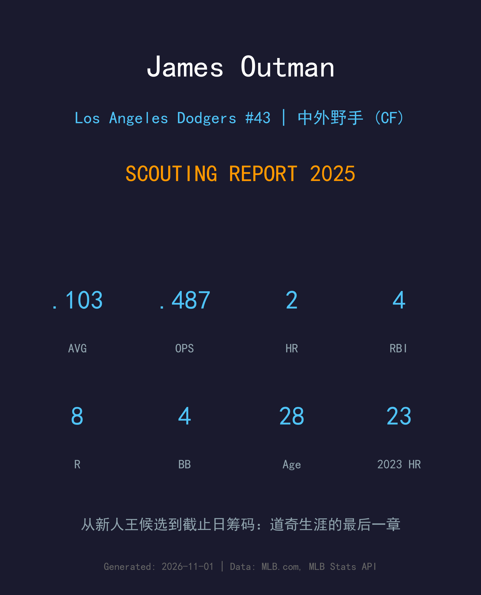
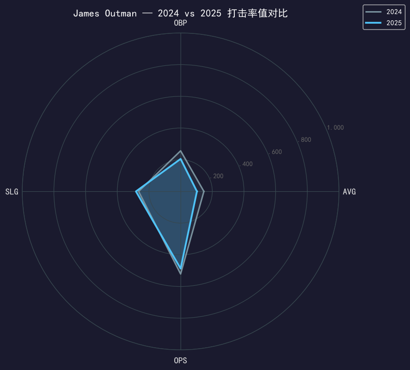
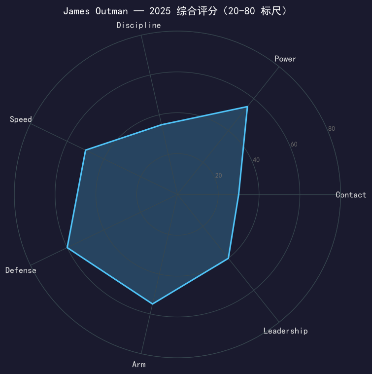

Los Angeles Dodgers #43 | 中外野手 | 左打 | 2023 新人年之星 · 截止日交易离队

⚠️ 小样本警告：本报告基于 22 场 / 44 个打席的道奇告别段数据。
James Outman 的道奇故事是一个陡峭的过山车：2023 年新人赛季 23 轰、中外野金手套级守备，一度是道奇未来的门面；2024 年跌至 .147 被下放；2025 年他在大联盟与 3A 之间三度往返，44 个打席仅 4 支安打——然后在 7 月 31 日交易截止日，道奇用他换回了后援投手 Brock Stewart，这段旅程就此终结。
他的离开是 roster 逻辑的胜利而非潜力的否定：道奇外野拥挤（Betts、Pages、Teoscar、Conforto、Kim），Outman 的三振黑洞（本季 40.9%）在争冠窗口里没有容错空间。28 岁的他带着 2023 年的闪光去往明尼苏达——那是他重新证明自己的起点。
大联盟首个完整赛季：23 轰 70 打点、.248/.353/.478（OPS .831），中外野守备范围惊艳——他是那届新人里最有明星相的面孔之一。
2024 年 .147 的打击率伴随三振危机被下放 3A；2025 年三度往返大联盟（5/6、7/7 召回；5/19、7/31 离开），最终在截止日成为交易筹码。

| 赛季 | G | PA | AVG | OBP | SLG | OPS | HR | RBI | BB | SO | SB |
|---|---|---|---|---|---|---|---|---|---|---|---|
| 2024 | 53 | 156 | .147 | .256 | .265 | .521 | 4 | 11 | 16 | 55 | 2 |
| 2025 | 22 | 44 | .103 | .205 | .282 | .487 | 2 | 4 | 4 | 18 | 0 |
连续两年的样本讲述同一个故事：三振正在吞噬他的打击。40.9% 的三振率（2024 年 35.3%）意味着他每 10 个打席有超过 4 个以 K 告终；.103 的 AVG 背后是 contact 工具的全面失灵。但 44 个打席里仍有 2 轰、.282 的 SLG——他的 raw power（2023 年 23 轰的底子）并未消失，消失的是碰到球的能力。这也是双城愿意接手的全部理由。
Outman 的挥棒轨迹长、上勾幅度大，对高速上缘球的追打是他三振率飙升的技术根源。2023 年的成功建立在投手还没针对他调整之前；当联盟找到那本手册后，他的 adjustment 来得太慢。道奇给了他两年时间与多次 3A 重置机会，44 个打席的 .103 是最后的答卷。
公平地说：Outman 的中外野守备（range、臂力、路线判断）在整个 2025 依然是联盟上游水平。如果他的 bat 能回到 .220/.320 级别的 league floor，他就是一支球队的主力中外野——这正是双城的赌注。
3/20 下放 → 5/6 召回 → 5/19 下放 → 7/7 召回 → 7/31 交易。这条四度转折的轨迹线在截止日收束。用一位 28 岁、仍有明星履历余温的外野手换回争冠牛棚的 Stewart，道奇的计算很清楚；而对 Outman，明尼苏达是重启键。

守备 A- 的 power-speed 外野；contact 决定他是重启成功还是淡出
C+ 级 / 需要重置的工具型外野（小样本警告）
道奇 2025 季后赛之路：外卡轮 2-0 红人 → NLDS 3-1 费城人 → NLCS 4-0 酿酒人 → 世界大赛 4-3 多伦多蓝鸟（二连霸）。
James Outman 在双城的机会结构比在道奇好得多：明尼苏达的外野竞争远没洛杉矶拥挤，他们有耐心等他的 contact 修复。他的课题清单很短也很难：把三振率压回 30% 以下、把 AVG 修回 .220——做到任何一条，他就是 MLB 常规中外野；两条都做不到，守备也留不住他太久。
短期：在双城赢得开幕名单，重建 everyday 身份
中期：若 contact 修复，回归 20+ 轰中外野
长期：power-speed-defense 组合的完全体仍是全明星级天花板
James Outman 出生于加州红木城，2018 年被道奇选中，2022 年 7 月 31 日完成大联盟首秀。2023 年，他的首个完整赛季震惊了整个联盟：23 支全垒打、出色的中外野守备、以及那张娃娃脸上的无畏——道奇球迷一度相信他们找到了未来十年的中外野答案。
但 2024 年的 .147 像一盆冷水，三振危机从瑕疵变成了主题。2025 年他在俄克拉荷马城与洛杉矶之间往返三次，最终在 7 月 31 日被交易到明尼苏达双城，换回后援投手 Brock Stewart。道奇生涯谢幕，过山车驶向北方——故事还没有写完。